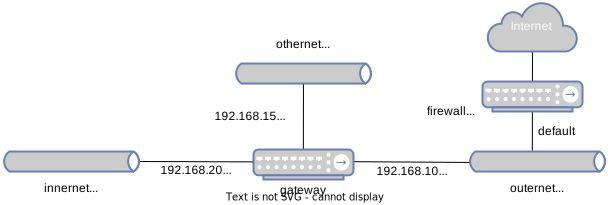

# Contents [Network Layer](#/network) [IP Fragmentation](#/ipfrag) [Routing](#/routing) [ICMP](#/icmp) [VPNs and IPsec](#/vpns)
# Network Layer
## Protocol stack: network layer <!-- [](https://commons.wikimedia.org/wiki/File:Sprouter100g.jpg) --> <img src="http://andromeda.cs.virginia.edu/nws/duimg/n01/image8.png" style="height:300px"> - Is charged with *routing* a *single* packet of data from one computer to another (via the next layer down) - In TCP/IP, called the "Internet" or "Internet Protocol" (hence "IP") layer - Example protocols: IPv4, IPv6, ICMP (used for 'ping'), IPsec (for VPNs) ## Internet Protocol version 4 <a href='https://commons.wikimedia.org/wiki/File:IPv4_header_(1).png'><img src='https://upload.wikimedia.org/wikipedia/commons/f/f9/IPv4_header_%281%29.png' style="width:100%"></a> - Addresses are 32 bits, represented as 4 decimal numbers, period-separated - Note the TTL & protocol fields; we'll see these shortly <!-- .slide: class="small-pre" --> ## IPv4 Addresses ``` Class A (#126) |<-- Host ID -->| 1. 0. 0. 0 = 00000001 00000000 00000000 00000000 126.255.255.255 = 01111110 11111111 11111111 11111111 Class B (#16,384) |<-- Host ID -->| 128. 0. 0. 0 = 10000000 00000000 00000000 00000000 191.255.255.255 = 10111111 11111111 11111111 11111111 Class C (#~2M) |HostID| 192. 0. 0. 0 = 11000000 00000000 00000000 00000000 223.255.255.255 = 11011111 11111111 11111111 11111111 Class D (#16) |<-- Address Range -->| 224. 0. 0. 0 = 11100000 00000000 00000000 00000000 239.255.255.255 = 11101111 11111111 11111111 11111111 Class E (#16) |<-- Address Range -->| 240. 0. 0. 0 = 11110000 00000000 00000000 00000000 255.255.255.255 = 11101111 11111111 11111111 11111111 ``` - 32 bit addresses - UVA has the 128.143 class B address range ## IP Address Ranges - Class D and class E addresses are reserved (multicast & "research purposes") - Consider the range of addresses from 127.0.0.0 to 127.255.255.255 - That's $2^{24} \approx 16$ million addresses - That range is referred to as: 127.0.0.0/24 - Meaning the last 24 bits can be anything - So any address that starts with 127. - UVA's range is 128.143.0.0/16 ## IPv4 Addresses - There are also *private* IP address ranges: - 10.0.0.0/24 (class A) - 127.0.0.0/24 (class A) - 169.254.0.0/16 (class B) - 172.16.0.0/16 to 172.31.0.0 (class Bs) - 192.168.0.0/8 to 192.168.255.0/8 (class Cs) - Primary usage: - 127.0.0.1 is used as the localhost IP - 192.168.0.0/16 are used as router private IPs <!-- .slide: class="right-float-img-600" --> ## IP protocols [](https://commons.wikimedia.org/wiki/File:IPv4_header_(1).png) - Full list [here](https://en.wikipedia.org/wiki/List_of_IP_protocol_numbers) - Relevant ones: - 1 is ICMP - 6 is TCP - 9 is IGP / IGRP (router-router messages) - 17 is UDP - 51 is IPsec ## IPv4 limitations - With only 32 bits, there are at most $2^{32} \approx 4$ billion addresses - There are about 30 billion connected devices in 2024 ([source](https://www.statista.com/statistics/512650/worldwide-connected-devices-amount/)) - How to connect them all? - Solution 1: Network Address Translation (NAT) - Solution 2: IPv6 (128 bit addresses) <h2 class="r-fit-text">Network Address Translation (NAT)</h2> <a href='https://commons.wikimedia.org/wiki/File:NAT_Concept-en.svg'><img src='https://upload.wikimedia.org/wikipedia/commons/c/c7/NAT_Concept-en.svg' width='100%'></a> ## NAT in Practice - UVA - UVA has many tens of thousands of connected devices - Most student, faculty, and staff (30k people) have a computer and a cell phone - Thousands of lab computers throughout UVA - Thousands of servers in the data centers - Yet only 16k publicly addressable IP addresses - Any non-public facing computer is NAT'ed - Your home router - May or may not have a public IP address - Likely dozens of devices connecting to it ## IP version 6 (IPv6) <a href='https://commons.wikimedia.org/wiki/File:Ipv6_header.svg'><img src='https://upload.wikimedia.org/wikipedia/commons/a/ab/Ipv6_header.svg' style="width:75%"></a> ## IPv6 Addresses <a href='https://commons.wikimedia.org/wiki/File:Ipv6_address_leading_zeros.svg'><img src='https://upload.wikimedia.org/wikipedia/commons/7/70/Ipv6_address_leading_zeros.svg'></a> <!-- .slide: class="wide-pre small-pre" --> ## IPv6 Addresses - Addresses are 128 bits, or 16 bytes, or 32 hex characters - Represented in 8 sets of 2-byte hex values (4 digits each) ``` asb2t@portal04:~$ ping6 -c 1 google.com PING google.com(lga25s79-in-x0e.1e100.net (2607:f8b0:4006:81f::200e)) 56 data bytes From fe80::a68c:dbff:fedd:9401%enp4s0 (fe80::a68c:dbff:fedd:9401%enp4s0) icmp_seq=1 Destination unreachable: No route --- google.com ping statistics --- 1 packets transmitted, 0 received, +1 errors, 100% packet loss, time 0ms asb2t@portal04:~$ ``` - The `::` means `:0000:`, and trailing zeros are omitted - Full address: fe80:0000:a68c:dbff:fedd:9401:0000:0000 ## IPv6 Usage - Essentially all IPv6 hosts have a IPv4 address as well - Often NAT'ed - Some places have not yet enabled IPv6 - As IPv4 w/NAT is fine for now - IPv4 are much easier for us to use - Thus, we won't be seeing any more IPv6 in this course
# IP Fragmentation
<!-- .slide: class="right-float-img-600" --> ## The Problem [](https://commons.wikimedia.org/wiki/File:IPv4_header_(1).png) [](https://commons.wikimedia.org/wiki/File:Ethernet_Type_II_Frame_format.svg) - IP packets can be large: up to 64 Kb - Ethernet packets max payload is 1,500 bytes - IP packets have to be split (fragmented) to be transmitted in multiple Ethernet packets <!-- .slide: class="right-float-img-500" --> ## IP Fragmentation [](https://commons.wikimedia.org/wiki/File:IPv4_header_(1).png) - The "identification" is the same for all fragments of a given packet - "Fragment offset" times 8 is the offset location - Only the last 13 (of 16) bits used for this value - First 3 bits (0-2) of "fragment offset" are flags: 0. Reserved, and always 0 1. DF: do not fragment 2. MF: more fragments (not the last) <!-- .slide: class="right-float-img-500" --> ## IP Fragmentation [](https://commons.wikimedia.org/wiki/File:IPv4_header_(1).png) - The *payload* (TCP or UDP packet) is fragmented, not the IP header - Example: a 5,000 byte payload, in a 520 byte IP packet - Fragment 1: 1,480 bytes of payload + 20 bytes of header = 1,500 bytes - MF is set to 1 - Fragments 2 and 3: same size and MF value as fragment 1 - Fragment 4: remaining 560 bytes of payload, plus 20 bytes of header = 580 bytes - MF is set to 0 <!-- .slide: class="right-float-img-400" --> ## [Teardrop attack](https://en.wikipedia.org/wiki/Denial-of-service_attack#Teardrop_attacks)  - IP fragments can overlap - This would crash very old versions of Windowsa - Windows 3.1, NT, and 95 - It would crash it *without user input!* <!-- .slide: class="right-float-img-500" --> ## [Ping of Death](https://en.wikipedia.org/wiki/Ping_of_death) [](https://commons.wikimedia.org/wiki/File:IPv4_header_(1).png) - Max IP packet size is 65,535 - Includes header - Fragment field is 13 bits - That times 8 is the offset - $(2^{13}-1) * 8 = 65,528$ - $65,535 - 65,528 = 7$ - What if the last fragment starts at location 65,528, and is more than 7 bytes? <!-- .slide: class="right-float-img-600" --> ## [Ping of Death](https://en.wikipedia.org/wiki/Ping_of_death) [](https://www.cloudns.net/blog/ping-of-death-pod-what-is-it-and-how-does-it-work/) - Many IP buffers for fragment reassembly were *fixed size* - Attack: - Create a packet larger (*much* larger), which will overflow that buffer - This can even inject code - Most OSes were vulnerable long ago - Windows IPv6 fragmentation was found to be vulnerable in 2020
# Routing
<!-- .slide: class="right-float-img-800" --> ## Gateway [](https://commons.wikimedia.org/wiki/File:Gateway_firewall.svg) - A *gateway* con- nects two different networks - Which are possibly of different types - Very little routing going on - If a packet comes in one end, then it goes out the other end <!-- .slide: class="right-float-img-800" --> ## Router <img src="images/network-layer/general-routing-diagram.svg" style="width:400px"> - A router connects more than 2 networks - If it's 2, then it's a gateway - If it's 1, then it's a computer - It keeps a *routing table* - For a given IP or range, which outbound wire to send it along? - Routing: - If a packet comes from network 1... - Look up in the table whether to send it down network 2 or 3 <!-- .slide: class="wide-pre" --> ## Routing table  ``` root@gateway:/# ip route default via 192.168.100.1 dev eth2 192.168.100.0/24 dev eth2 proto kernel scope link src 192.168.100.2 192.168.150.0/24 dev eth1 proto kernel scope link src 192.168.150.1 192.168.200.0/24 dev eth0 proto kernel scope link src 192.168.200.1 root@gateway:/# ``` ## gateway's routing table  - The routing table routes are in bold - This routing table is hard coded in our docker setup - Via the `nws-exec.sh` script run upon container startup ## Hops (TTL) <a href='https://commons.wikimedia.org/wiki/File:Hop-count-trans2.png'><img src='https://upload.wikimedia.org/wikipedia/commons/3/35/Hop-count-trans2.png' style="height:250px"></a> - When a packet is routed through a network, it passes through a number of nodes - Each node is a hop - There is maximum number of hops before the packet times out (is discarded) - This is time-to-live (TTL), and is decremented each hop - It's a counter, not a duration ## traceroute <!-- .slide: class="smaller-pre" --> ``` asb2t@portal08:~$ traceroute www.google.com traceroute to www.google.com (142.250.80.100), 64 hops max 1 128.143.63.1 2.643ms 3.459ms 0.964ms 2 128.143.221.17 0.283ms 0.200ms 0.192ms 3 128.143.236.90 0.290ms 0.265ms 0.266ms 4 128.143.236.5 0.397ms 0.289ms 0.281ms 5 192.35.48.30 3.450ms 3.340ms 3.402ms 6 72.14.197.96 5.553ms 4.860ms 4.946ms 7 * * * 8 108.170.246.33 4.463ms 4.338ms 4.288ms 9 108.170.246.2 7.250ms 33.738ms 9.570ms 10 216.239.63.235 4.696ms 4.410ms 4.414ms 11 142.251.227.117 9.620ms 9.707ms 9.602ms 12 209.85.255.37 29.699ms 16.033ms 13.441ms 13 108.170.248.97 8.618ms 8.606ms 8.573ms 14 142.251.65.115 8.881ms 8.902ms 8.872ms 15 142.250.80.100 8.763ms 8.733ms 8.745ms asb2t@portal08:~$ ``` - Sends multiple probes from TTL of 1 and up - The maximum number of hops is 64, it took 15 - Hop 7 was an anonymous hop - The times are 3 different round-trip times ## Traceroute in Python w/Scapy File is [traceroute.py](slides/code/traceroute.py) ([src](slides/code/traceroute.py)) ``` import sys from scapy.all import * dest ='142.250.80.100' # google.com for TTL in range(1,40): response = sr1(IP(dst=dest,ttl=TTL)/ICMP(), timeout=2, verbose=0) if response is None: print("%2d * * *" % TTL) else: print("%2d %s" % (TTL,response.src)) if ( response is not None and response.src == dest ): break; ``` ## Traceroute in Python w/Scapy ``` $ sudo python3 traceroute.py 1 192.168.14.1 2 96.120.18.197 3 96.108.129.85 4 96.108.141.249 5 96.110.42.133 6 96.110.34.118 7 66.208.216.218 8 108.170.246.33 9 108.170.246.49 10 142.251.49.73 11 142.251.69.26 12 142.251.69.0 13 108.170.248.97 14 142.251.65.115 15 142.250.80.100 $ ``` Note the `sudo` <h2 class="r-fit-text">What about <a href='https://www.cs.virginia.edu'>www.cs.virginia.edu</a>?</h2> ``` $ sudo python3 traceroute.py 1 192.168.14.1 2 96.120.18.197 3 96.108.129.85 4 96.108.141.249 5 96.110.42.129 6 96.110.32.122 7 162.252.69.145 8 163.253.1.144 9 192.122.175.58 10 192.35.48.33 11 128.143.236.6 12 128.143.236.89 13 * * * 14 * * * 15 * * * 16 * * * ^C $ ``` ## Traceroute security - Traceroute can be used to map the internals of a company's network - By the ICMP time-exceeded packet response - Many firewalls block these packets - Hence the `* * *` output, as no response was received <!-- .slide: class="right-float-img-800" --> ## Adding to the routing table <img src="images/network-layer/general-routing-diagram.svg" style="width:400px"> - Assume: a packet comes in from network 1, and the IP address is not in the router's routing table - The router asks it's neighboring routers how many hops they would take to get to that address - Those routers may ask their neighbors, and so on - The router picks the route with the lowest TTL - And updates its routing table - Example protocols: [RIP](https://en.wikipedia.org/wiki/Routing_Information_Protocol), [IGRP](https://en.wikipedia.org/wiki/Interior_Gateway_Routing_Protocol), [EIGRP](https://en.wikipedia.org/wiki/Enhanced_Interior_Gateway_Routing_Protocol), etc. <!-- .slide: class="right-float-img-1000 no-border" --> ## Adding to the routing table [](https://commons.wikimedia.org/wiki/File:Sprouter100g.jpg) - Routers can send other messages as well - Redirect (via [ICMP](https://en.wikipedia.org/wiki/Internet_Control_Message_Protocol)) - Destination unreachable (also via [ICMP](https://en.wikipedia.org/wiki/Internet_Control_Message_Protocol)) - These cause updates to the router's routing table - The router then broadcasts these updates to its neighbors - Thus, receiving a re-route message is expected behavior - And a vulnerability <!-- .slide: class="right-float-img-800" --> <h2 class="r-fit-text">Maliciously modifying a routing table</h2>  - `other`'s default gateway is `gateway` - What if `outer1` sent an update to `other` that it was the new route? - This was going to be the subject of the upcoming routing assignment - But... Docker
# ICMP ### Internet Control Message Protocol
<!-- .slide: class="right-float-img-600" --> ## ICMP <a href='https://commons.wikimedia.org/wiki/File:ICMP_header_-_General-en.svg'><img src='https://upload.wikimedia.org/wikipedia/commons/e/e1/ICMP_header_-_General-en.svg' style="width:500px"></a> - Type: - 0: ping reply - 3: TTL exceeded - 4: source quench - 5: redirect - 8: ping - 13 & 14: time sync & reply - 30: traceroute - Full list [here](https://en.wikipedia.org/wiki/Internet_Control_Message_Protocol#Control_messages) - Code: a parameter to type - Content: if needed for the type & code - Can have a data section (fuller error messages) ## [ping.py](code/ping.py.html) ([src](code/ping.py)) in Scapy ```python from scapy.all import * ip = "128.143.67.11" # www.cs.virginia.edu pkt = IP(dst=ip) / ICMP(type=8) reply = sr1(pkt) print ("Reply from", reply[IP].src, "with destination", reply[IP].dst) ``` ``` $ sudo python3 ping.py Begin emission: Finished sending 1 packets. ...........* Received 12 packets, got 1 answers, remaining 0 packets Reply from 128.143.67.11 with destination 128.143.67.84 $ ``` <!-- .slide: class="right-float-img-600 no-border" --> ## [Smurf attack](https://en.wikipedia.org/wiki/Smurf_attack)  - Although this doesn't work anymore... ```python vip = '...' # victim IP # set broadcast ip in `bip` as victim's # ip w/255 @ end send (IP(src=vip, dst=bip) / ICMP(type=8)) ``` - Broadcasts are sent to everybody - So everybody replies, but to the victim's IP - Network flood: one packet causes 250 more to be sent - Now hosts don't respond to a ping to a broadcast address - Named because many small, numerous attackers <!-- .slide: class="right-float-img-800 no-border" --> ## ICMP Tunneling [](https://commons.wikimedia.org/wiki/File:SMP_May_2008-9a.jpg) - Communication can be sent in the data in an ICMP packet - Hard to detect, and ICMP is often let through firewalls - Requires a server at the other end to process the ICMP data - Very popular with malware! - Malware can communicate with the C&C (Command & Control) server - Or one can send covert messages to a botnet - Etc. ## ICMP Tunneling ```python from scapy.all import * ip = "192.168.100.101" # outer1 pkt = IP(dst=ip) / ICMP(type=8) / \ b"the condor is in flight" reply = sr1(pkt) print ("Reply from", reply[IP].src, "with destination", reply[IP].dst) print ("Message:", reply.load) ``` ``` root@outer2:~# python3 ping.py Begin emission: Finished sending 1 packets. ..* Received 3 packets, got 1 answers, remaining 0 packets Reply from 192.168.100.101 with destination 192.168.100.102 Message: b'the condor is in flight' root@outer2:~# ``` ## ICMP Tunneling Server ```python from scapy.all import * def icmp_cnc(pkt): #print(pkt.show()) print("From",pkt[IP].src,"received:",pkt[Raw].load) filter = "icmp" pkt = sniff(iface='eth1', filter=filter, prn=icmp_cnc) ``` ``` root@outer1:/mnt# python3 icmp_cnc.py From 192.168.100.102 received: b'the condor is in flight' From 192.168.100.101 received: b'the condor is in flight' ^C root@outer1:/mnt# ``` <!-- .slide: class="right-float-img-600" --> ## Stopping ICMP Tunneling <a href='https://commons.wikimedia.org/wiki/File:ICMP_header_-_General-en.svg'><img src='https://upload.wikimedia.org/wikipedia/commons/e/e1/ICMP_header_-_General-en.svg' style="width:500px"></a> - Solution 1: block all ICMP traffic - Causes network issues, such as very slow host-is-offline discoveries - Some expected network functionality no longer works - Solution 2: only allow fixed-size ICMP messages through - Prevents arbitrary sized payloads - An ICMP packet without any data is exactly 8 bytes in size - Solution 3: restrict ICMP to authenticated users - Complicated to manage <!-- .slide: class="right-float-img-600 no-border" --> ## Other ICMP Tunneling Uses [](https://duckduckgo.com/?q=airplane+wifi&t=osx) - Allows Internet access behind a paywall or login portal - Example: airplane wifi - Requires a server on the other side to receive the ICMP packets and forward them on
# VPNs and IPsec
## Virtual Private Network (VPN) - A firewall differentiates between 'inside' and 'outside' to allow more access to those 'inside' - How, then, does a (valid) user have that level of access from the 'outside'? - Example: using UVa's library's access for online books and what-not - It's allowed on-grounds (technically, for any computer in the virginia.edu domain) - But not off-grounds (such as from va-67-76-91-214.dyn.embarqhsd.net) - The answer: VPNs ## Normal (non-VPN) usage <img src="images/network-layer/vpn-diagram-1.svg" style="height:350px"> - A normal connection has your data being routed to the website through your ISP's servers (red lines) - The ISP sees who you are routing to, and any unencrypted traffic ## Using a VPN <img src="images/network-layer/vpn-diagram-2.svg" style="height:350px"> - A VPN creates an encrypted "tunnel" to UVA's VPN server - The only thing the ISP sees is the encrypted data going to/from UVA - The VPN provider (UVA) sees who you are routing to (green lines), the ISP does not ## Virtual Private Network (VPN) - A VPN makes potentially vastly separated IP addresses appear to be a single (virtual) private network - Then, the access is provided to that private network - Keeps one from having to construct one's own private network (expensive) - It matters not what type of ISP the user is on - Typically requires a setting or two in a residential 'gateway' (specifically, IPsec) ## VPN Scams - Do you trust your VPN provider? - Consider the VPN ad in [this podcast episode](https://roosterteeth.com/watch/black-box-down-2023-2-8) - Saved locally [here]() - The ad starts at 28:43, and ends at 29:48 - Not a good example - Thoughts? ## IP Security (IPsec) - IPsec is a protocol suite designed to allow encryption of IP packets (at the Network level) - Other similar ones exist: TLS (Transport Layer Security) does something similar at the Transport level - SSL (Secure Sockets Layer) is the predecessor to TLS - Allows for authentication, exchange of cryptographic keys, and encryption/decryption of IP data packets - Encryption is via AES - For our purposes, we'll say it works like TLS (which we'll see later) ## IPsec Tunnel vs Transport <a href='https://commons.wikimedia.org/wiki/File:Ipsec-ah.svg'><img src='https://upload.wikimedia.org/wikipedia/commons/a/a8/Ipsec-ah.svg'></a> - AH = Authentication Header ## Is IPsec secure? - As part of the [Snowden leaks](https://en.wikipedia.org/wiki/Global_surveillance_disclosures_(2013–present)) (2013), it was revealed that NSA was actively working to insert security vulnerabilities into IPsec - Called the larger [Bullrun program](https://en.wikipedia.org/wiki/Bullrun_(decryption_program)) - [Logjam attack](https://en.wikipedia.org/wiki/Logjam_(computer_security)) (2015): a weakness in the selection of random primes for DHE made it crackable - The NSA claimed around then, in leaked papers, that they could break much of current cryptography; this is consistent with this DHE weakness - The [NSA-tied Equation group](https://en.wikipedia.org/wiki/Equation_Group), around 2016, was believed to have used [zero-day exploits](https://en.wikipedia.org/wiki/Zero-day_(computing)) against VPN equipment - The [Cisco PIX and ASA firewalls](https://en.wikipedia.org/wiki/Cisco_PIX#Security_vulnerabilities) had vulnerabilities that the NSA exploited for warantless wiretapping